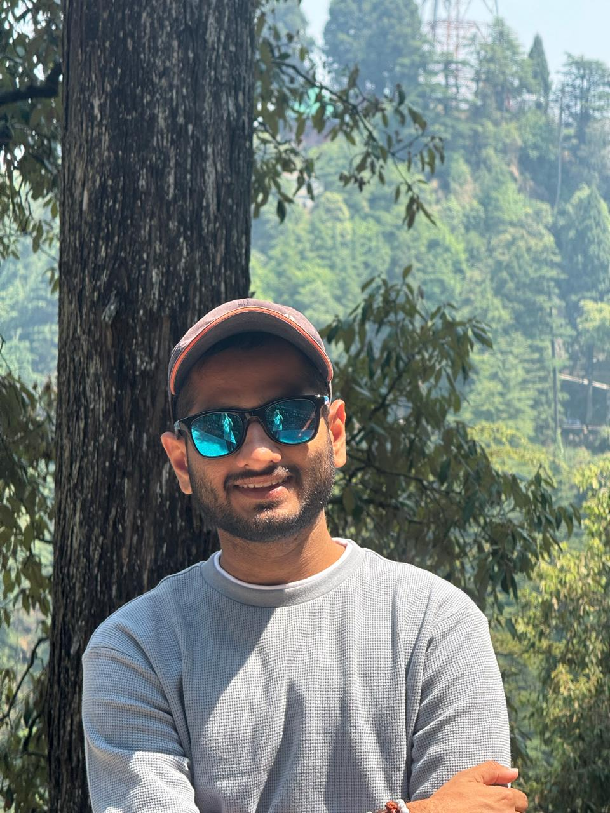

Rudra Patel
B.Tech (Materials Engineering) — Computational Materials • IIT Jodhpur
Email: patelrudra400@gmail.com • Phone: +91-8160079643
About
I’m Rudra Patel, a final-year Materials Engineering student at IIT Jodhpur with a passion for combining materials science and artificial intelligence.
I love solving complex problems — from simulating materials at the atomic scale to building AI models that can predict properties or monitor manufacturing in real time.
Over the past few years, I’ve worked on projects in computational materials, machine learning, and additive manufacturing, gaining hands-on experience with tools like Quantum ESPRESSO, LAMMPS, DAMASK, and Python-based AI frameworks.
My goal is simple: use data, computation, and creativity to speed up the way we design and understand new materials.
Ongoing Projects
In-situ Monitoring & Dimensional Analysis of Additive Manufacturing
Developing an in-situ monitoring system using deep learning and 3D reconstruction to assess dimensional accuracy during FDM prints.
Layer Determination in 2D TMDs
Using optical contrast and ML to predict the number of layers in transition metal dichalcogenides.
ML-Based Property Prediction of Li-based Oxides
Interpretable ML pipelines to predict bandgap and formation energy for layered lithium transition metal oxides.
Selected Projects
Rolling-Based Study of Ti-5553 Alloy
Aug 2024 – May 2025
Synthesis, rolling and mechanical testing of Ti-5553 alloy; microstructure characterization and hardness testing.
ML-Driven Image Processing of Electron Micrographs
Aug 2023 – Dec 2023
Developed TEM image processing pipeline, interpolation and ML-based analysis.
Bulk Modulus Calculation of Si and Ni using Quantum ESPRESSO
Jun 2024
Structure optimization, energy calculations, polynomial fitting and bulk modulus extraction.
Electronic Band Structure & DOS Analysis (Si & Al)
Jul 2024
SCF & NSCF calculations, DOS plotting and bandgap analysis using Quantum ESPRESSO.
Publications
Rudra Patel, Akhil Garg. Uncertainty-Aware Prediction of Mechanical Properties in 2D Materials Using Random Forest and Monte Carlo Simulations. (Submitted, 2025)